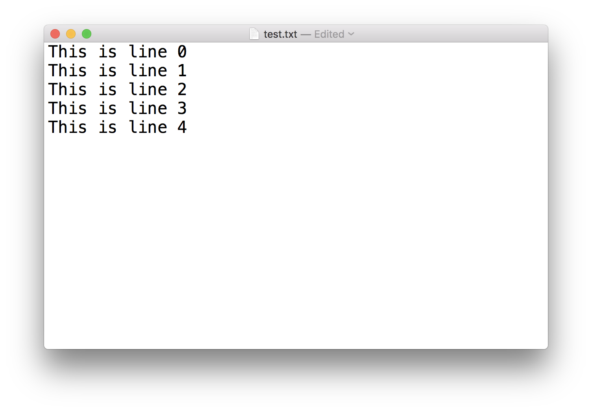
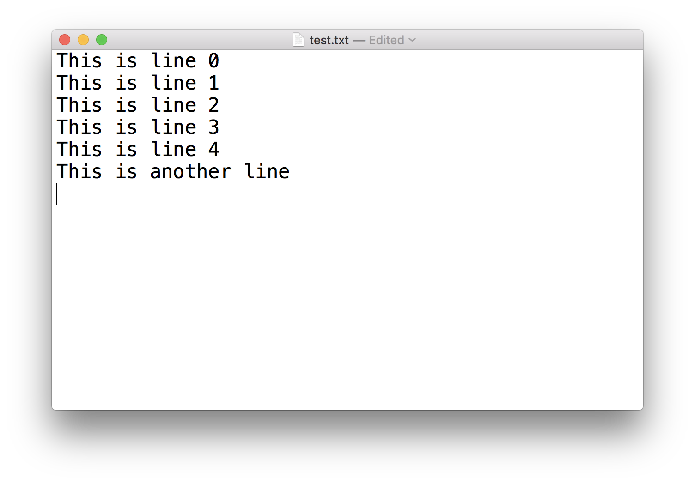
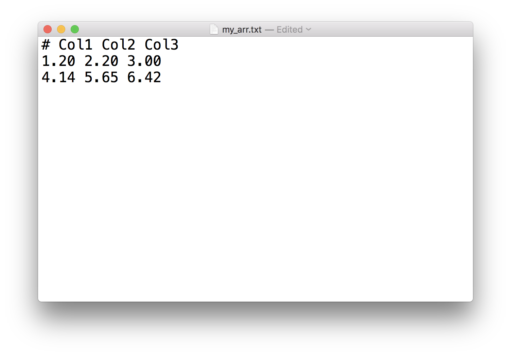

This notebook contains an excerpt from the An Introduction To Python Programming And Numerical Methods For Scientists and Engineers; the content is available on GitHub.
The text is released under the CC-BY-NC-ND license, and code is released under the MIT license. If you find this content useful, please consider supporting the work by buying the book!
< CHAPTER 11. Reading and Writing Data | Contents | 11.2 CSV Files >
TXT Files¶
So far, we used print function to display the data to the screen. But there are many ways to store data onto your disk and share it with other program or colleagues. For example, if I have some strings in this notebook, but I want to use them in another notebook, the easiest way is to store the strings into a text file, and then open it in another notebook. A text file, many times with an extension .txt, is a file containing only plain text. However, programs you write and programs that read your text file will usually expect the text file to be in a certain format; that is, organized in a specific way.
To work with text files, we need to use open function which returns a file object. It is commonly used with two arguments:
f = open(filename, mode)
f is the returned file object. The filename is a string where the location of the file you want to open, and the mode is another string containing a few characters describing the way in which the file will be used, the common modes are:
‘r’, this is the default mode, which opens a file for reading
‘w’, this mode opens a file for writing, if the file does not exist, it creates a new file.
‘a’, open a file in append mode, append data to end of file. If the file does not exist, it creates a new file.
‘b’, open a file in binary mode.
‘r+’, open a file (do not create) for reading and writing.
‘w+’, open or create a file for writing and reading, discard existing contents.
‘a+’, open or create file for reading and writing, and append data to end of file.
Write a file¶
TRY IT! Create a text file called test.txt and write a couple lines in it.
f = open('test.txt', 'w')
for i in range(5):
f.write(f"This is line {i}\n")
f.close()
We could see the code above that we first opened a file object f with the file name ‘test.txt’. We used “w+” for the mode, that indicates write We then write 5 lines (note the newline ‘\n’ at the end of the string), and then we close the file object. We could see the content of the file in the following figure.

NOTE! It is good practice to close the file using f.close() in the end. If you do not close them yourself, Python will eventually close them for you. But sometimes, when writing to a file, the data may not written to disk until you close the file. Therefore, the longer you keep the file open, the greater chances you will lose your data.
Append to a file¶
Now, let’s append some string to the test.txt file. It is very similar to how we write the file, with only one difference - change the mode to ‘a’ instead.
f = open('test.txt', 'a')
f.write(f"This is another line\n")
f.close()

Read a file¶
We could read a file from disk and store all the contents to a variable. Let’s read in the test.txt file we created above and store all the contents in the file to a variable content.
f = open('./test.txt', 'r')
content = f.read()
f.close()
print(content)
This is line 0
This is line 1
This is line 2
This is line 3
This is line 4
This is another line
Using this way, we could store all the lines in the file into one string variable, we could verify that variable content is a string.
type(content)
str
But sometimes we want to read in the contents in the files line by line and store it in a list. We could use f.readlines() to achieve this.
f = open('./test.txt', 'r')
contents = f.readlines()
f.close()
print(contents)
['This is line 0\n', 'This is line 1\n', 'This is line 2\n', 'This is line 3\n', 'This is line 4\n', 'This is another line\n']
type(contents)
list
Dealing with numbers and arrays¶
Since we are working with numerical methods later, and many times, we work with the numbers or arrays. We could use the above methods to save the numbers or arrays to a file and read it back to the memory. But it is not so convenient this way. Instead, commonly we use the numpy package to directly save/read an array. Let’s see an example.
TRY IT! Store an array [[1.20, 2.20, 3.00], [4.14, 5.65, 6.42]] to a file named my_array.txt and read it back to a variable called my_arr.
import numpy as np
arr = np.array([[1.20, 2.20, 3.00], [4.14, 5.65, 6.42]])
arr
array([[1.2 , 2.2 , 3. ],
[4.14, 5.65, 6.42]])
np.savetxt('my_arr.txt', arr, fmt='%.2f', header = 'Col1 Col2 Col3')
We can see from the above example to save a 2D array into a text file using np.savetxt. The first argument is the file name, second argument is the arr object we wave to save, and the third argument is to define the format for the output (I use ‘%.2f’ to indicate we want the output numbers with 2 decimals). The fourth argument is the header we want to write into the file.

my_arr = np.loadtxt('my_arr.txt')
my_arr
array([[1.2 , 2.2 , 3. ],
[4.14, 5.65, 6.42]])
We can see read in the file directly to an array is very simple using the np.loadtxt function. And it skips the first header as well. There are many different argument that could control the reading, we won’t get in too much details here, you can check the documentation or use the question mark to get the help. We will also use it more in the next section in the chapter.
< CHAPTER 11. Reading and Writing Data | Contents | 11.2 CSV Files >